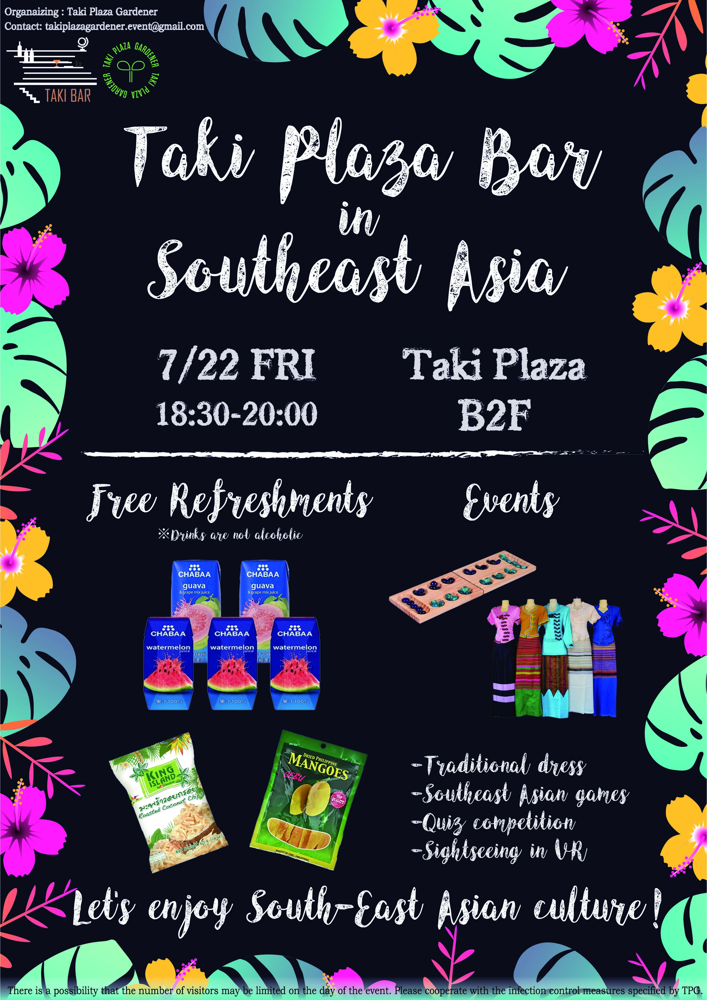
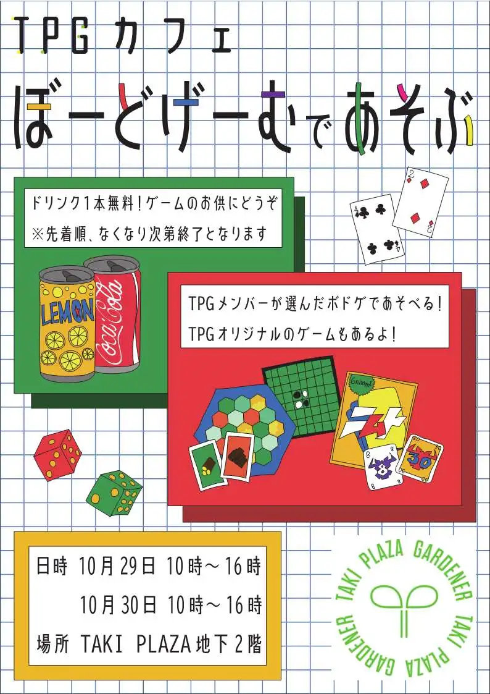
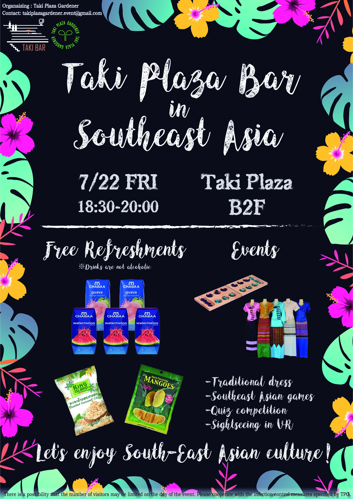
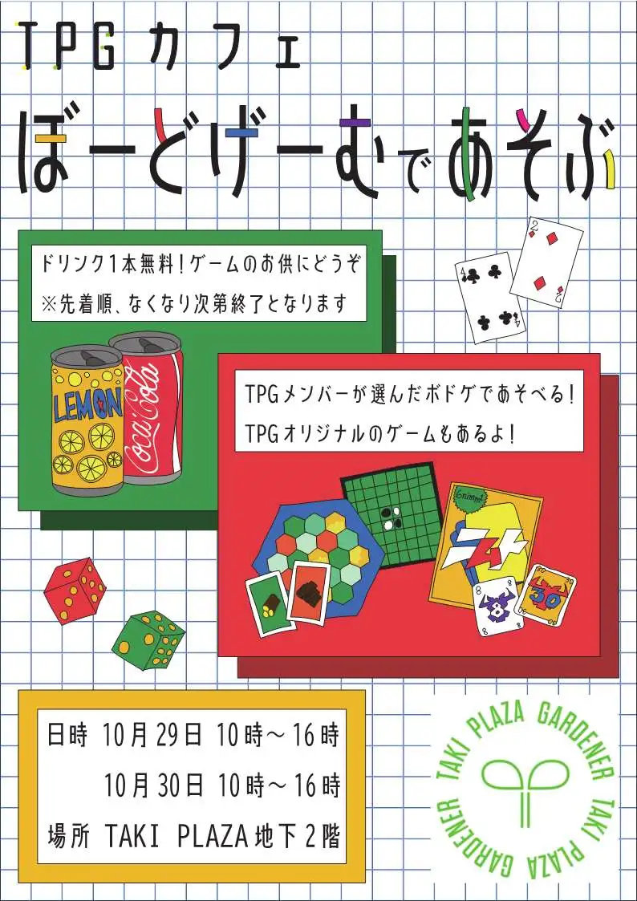

2023年3月24日
制作班紹介【2023新歓ブログリレーvol-8】
TPGの新歓ブログリレーをここまで読んでくれたみなさん、ありがとうございます。まだの人はぜひ他班やリーダー、副リーダーの紹介も覗いてみてください。TPGの楽しい活動の様子が見れますよ。
ここでは、制作班の紹介をしたいと思います。
制作班では、TPGが主催しているイベントのポスターや広報用の画像を作ったり、イベントの際にTaki
Plazaを装飾したりしています。TPGでは、一年間を通して様々なイベントを行っています。4/11~4/14に開催する若葉祭を始めとして、去年は夏に音楽フェスのTaki
Fesや、国際交流を目的としたイベントであるTaki
Barなどを開催しました。（イベントの詳細についてはぜひイベントのページ、またはイベント班の新歓ブログを見てみてください！）
制作班ではこのようなポスターを制作しました。
 



イベントのポスターを制作する際には、主催する班の人たちと企画の段階から話し合いに参加し、イベントの雰囲気に沿った制作ができるようにしています。他の班の人とも仲良くなれます。またポスターだけでなく、去年はスライドのテンプレートを作ったりもしました。
ポスター制作について書いてきましたが、制作班では映像制作も行っています。Taki
Plazaの地下2階への階段を降りたところにあるモニターに流れている映像はTPGが制作したものです。また、イベントの様子を撮影してYoutubeに掲載したり、最近では広報班と一緒にYoutubeをつかって広報していこうと企画しています。
また、去年のクリスマスにはTaki
Plazaをクリスマス仕様に装飾しました。今年もそういった装飾をしたいと予定しています。アイデアは絶賛考え中です。
毎週の定例会では、他班からもらった依頼を共有して担当者を決めたり、イベントの装飾について話し合ったりしています。(定例会が終わった後、時間のある人だけ残っていつのまにかカタンなどのボードゲームが始まっていることもあります。)
私もそうでしたが、TPGに入ったときにはデザインや映像制作をやったことがない人が多かったです。しかし去年の春にはソフトの使い方やデザインの基礎を教えてもらう勉強会が開かれており、おかげで今なんとかやっています。
今年ももちろん実施する予定なので、何もわからない！という人でも大丈夫です。勉強会といっても堅いものではなく、いい意味でゆるく気張らずにできるのが制作班のいいところかなと思います。デザインや映像制作に興味のある人はもちろん、漠然と「なにかやりたいんだよな～」という人も大歓迎です。TPGは楽しいですよ。